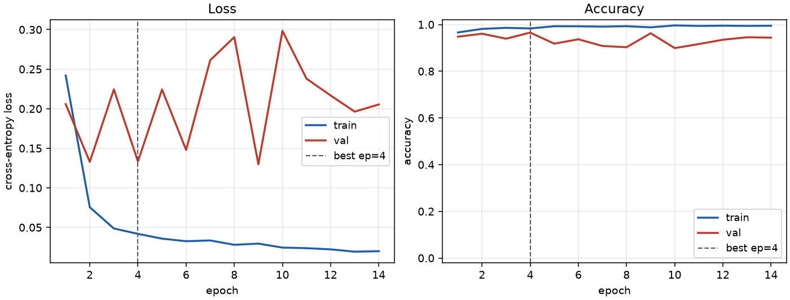

Cross-entropy · early stop on val accuracy · best checkpoint at epoch 4
2-way softmax · hidden 32 · 68 sensors · batch 32 · lr 10−3
~12.8k train / 2.4k val windows · scenario holdout eval set
Best val accuracy 0.966 · detection, not isolation